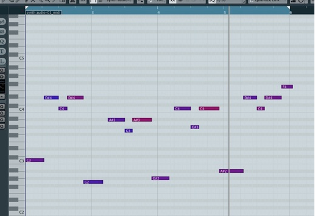
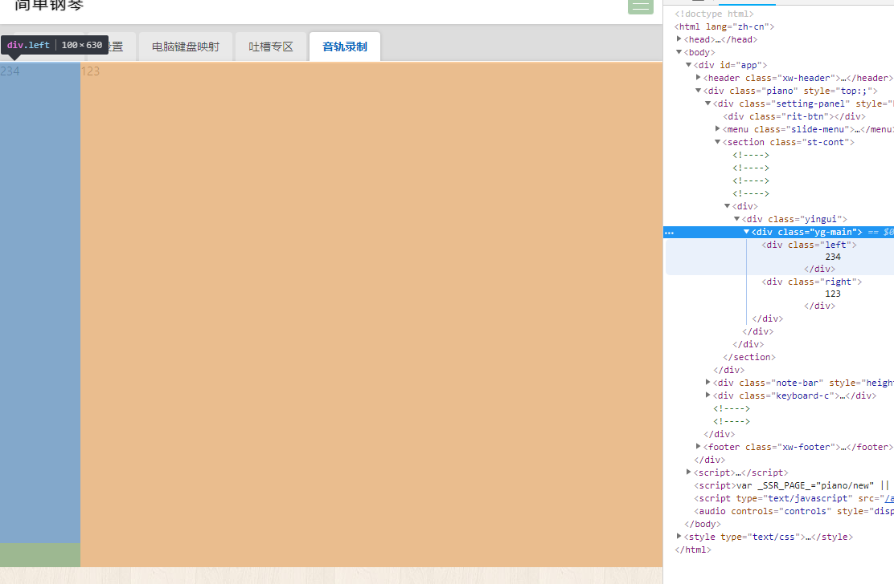
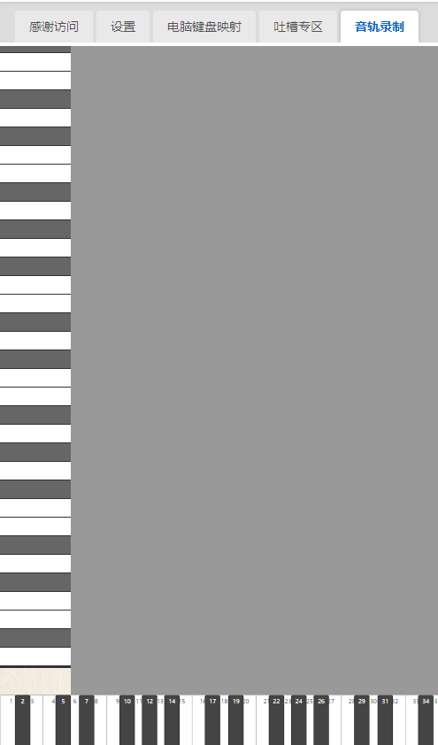

简单钢琴-音轨录制功能开发(一) - 左侧键盘位置参考部分

发布于
网上找了一个音频软件的键编辑器的图，作为这次的的录制的编辑器的参考图。
分析，需要左右两个模块，左边是一排垂直的键盘，右边则是可以左右滚动的音轨区，右侧的背景也需要处理一下。上方的选区和播放的待这部分基础功能开发完再开发。
上代码上图
先初始化我的页面
<template>
<div class="yingui">
<div class="yg-main">
<div class="left">
234
</div>
<div class="right">
123
</div>
</div>
</div>
</template>
<script>
export default {
data () {
return {};
},
};
</script>
<style lang="stylus">
.yingui{
>.yg-main{
position relative;
>.left {
position relative;
width 100px;
height 600px;
background #aaa;
padding 0 0 30px 0;
}
>.right {
position absolute;
top 0
left 100px;
right 0;
height 100%;
background #d2d2d2;
overflow-x hidden;
}
}
}
</style>
页面初始化后效果如下

现在来写代码，把左边的键盘加上。考虑到键的dom会比较多，所以我考虑不使用vue进行控制dom，直接在.left的div里边append原生的dom，这样可以让vue在render的时候不用处理这一块，而且这一块是不怎么需要变化的，所以完全满足可以优化的条件。
现在把左边的钢琴键列表填充一下
<template>
<div class="yingui">
<div class="yg-main">
<div class="left">
<div
ref="keyList"
class="left-keylist"
/>
</div>
<div class="right">
</div>
</div>
</div>
</template>
<script>
import { heiKeyArray } from '../../keyboard.js';
export default {
data () {
return {};
},
mounted () {
let keyDomList = '';
heiKeyArray.forEach((element) => {
keyDomList = '<div></div>' + keyDomList; // 白键
if (element > 0) {
keyDomList = '<div></div>' + keyDomList; // 黑键
}
});
this.$refs.keyList.innerHTML = keyDomList;
},
};
</script>
<style lang="stylus">
.yingui{
>.yg-main{
position relative;
>.left {
position relative;
width 80px;
padding 0 0 30px 0;
}
>.right {
position absolute;
top 0
left 80px;
right 0;
height 100%;
background #999;
overflow-x hidden;
}
}
.left-keylist {
background #333;
padding 2px 0;
margin 0px 0;
>div {
height 20px;
margin 1px 0;
}
>.w {
background #fff;
}
>.h {
background #666;
}
}
}
</style>
效果如下图

左侧的钢琴键位参考已经画出来了
这里为什么黑键和白键一样长，一样宽，主要是为了音轨在上面也等宽。
接下来开发右侧音轨区域的背景部分。
评论
或 匿名发表评论